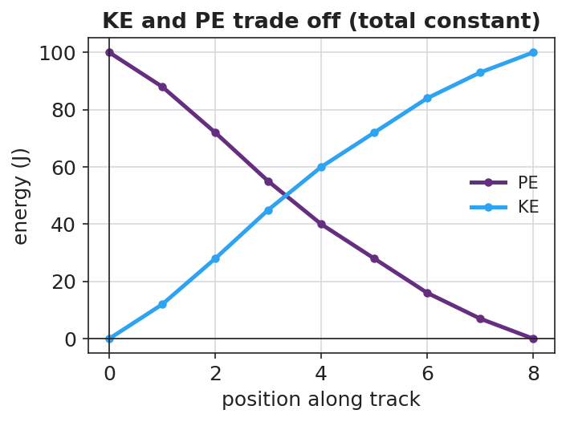

Unit: Work, Energy & Power — Lesson 05: Conservation of Energy
Phenomenon
A pendulum released from one side swings up to almost the same height on the other side — over and over. At the bottom it moves fast; at the top it stops. A skate-park half-pipe and a roller coaster do the same trade between height and speed.
Driving Question
What is being traded as something rises and falls, and does the total amount of energy stay the same?
Notice & Wonder
Watch the pendulum swing back and forth. Write what you notice and what you wonder.
Initial Model
Sketch the half-pipe (or pendulum). Mark TOP, MIDDLE, BOTTOM. At each point, predict KE and PE as HIGH, MEDIUM, or ZERO.
Investigate
A 1.0 kg cart rides a frictionless valley track. Slide its position from the top of one side to the bottom and up the other. Watch the PE bar shrink as the KE bar grows — but the total bar never changes. Energy is conserved: PE ↔ KE.
m = 1.0 kg · g ≈ 9.81 · KE = 0 J · PE = 196 J · Total = 196 J
Make It Make Sense
- A 2.0 kg ball is dropped from 5.0 m. Ignoring friction, what is its KE just before it lands? Use PE lost = KE gained, with g ≈ 9.81 m/s².
- At the bottom of a frictionless hill, is the cart's PE maximum or minimum? Is its KE maximum or minimum? Explain.
- Why does a real pendulum eventually stop, even though energy is conserved?
Stuck? Sentence frame
"As the cart drops, ___ energy turns into ___ energy, but the total stays ___ because energy is ___."
Key Vocabulary (max 3)
- mechanical energy — the sum of an object's kinetic and potential energy (KE + PE)
- conservation of energy — energy is never created or destroyed; without friction, mechanical energy stays constant
- energy transformation — the conversion of energy from one form to another, such as PE ↔ KE
Revise Your Model
Plot KE and PE vs. position along the track. Where do the two curves cross, and what is true of their sum everywhere?

Return to the Phenomenon
In one sentence, explain why the pendulum returns to (almost) the same height every swing, using conservation of energy and energy transformation.
Exit Ticket + Closing Reflection
- A 0.50 kg cart starts at rest at the top of a frictionless track 2.0 m high. (Use g ≈ 9.81 m/s².)
(a) What is its PE at the top? Show PE = mgh.
(b) Using conservation of energy, what is its KE at the bottom? Explain.
(c) On a real track with friction, would the KE at the bottom be more, less, or equal? Where does the difference go? - Reflection: What is one thing that surprised you today? Who helped you make sense of something?